Краткое резюме
Что за сайт. task.by — корпоративный сайт страховой компании ЗАСО «ТАСК», работающей на рынке с 1991 года. Сайт выполняет три функции: витрина продуктов страхования (для частных лиц и юрлиц), справочный/юридический портал (лицензии, реквизиты, раскрытие информации) и точка входа в онлайн-сервисы (личный кабинет, онлайн-страхование ОСГО, оплата через ЕРИП). Целевая аудитория — от частных автовладельцев, оформляющих ОСАГО/КАСКО, до корпоративных клиентов и государственных органов, то есть аудитория широкая и в среднем возрастная.
Общее впечатление. Сайт функционален и содержит большой объём достоверной информации, но визуально и по логике взаимодействия соответствует стандартам веб-дизайна 2012–2015 годов, а не 2026–2027. Структура страниц шаблонная и предсказуема — это плюс для навигации, но исполнение (типографика, иллюстрации, компоновка) выглядит устаревшим. Главная проблема — не в отсутствии контента, а в отсутствии пути к конверсии: почти нигде на сайте нет кнопки «оформить полис» или «рассчитать стоимость».
- Глубокая, предсказуемая иерархия разделов, одинаковая на всех страницах
- Большой объём достоверной юридической и справочной информации
- Работающие онлайн-сервисы: личный кабинет, онлайн-ОСГО, оплата через ЕРИП
- Понятная и рабочая форма авторизации
- Сеть из 11 региональных представительств с полными контактами
- Почти полное отсутствие CTA на продуктовых страницах
- Мобильная версия теряет номер телефона полностью
- Таблица тарифов КАСКО обрезается на мобильном без индикатора прокрутки
- «О компании» не формирует доверие — только юридические реквизиты
- Устаревший визуальный язык, смешение шрифтов, мелкий текст (14px)
- Системное дублирование блоков ссылок на уровне шаблона
Общий вывод. Сайт заслуживает оценки «крепкий справочный портал, но слабая продающая витрина». Рекомендуется не косметический редизайн, а пересмотр модели конверсии в сочетании с обновлением визуального языка и исправлением критических мобильных дефектов.
Общая оценка
Средние оценки по всем 8 проанализированным страницам, шкала 1–10.
Анализированные страницы
Страницы отобраны автоматически по итогам изучения структуры сайта как наиболее информативные для оценки IA, продуктовой линейки, точек конверсии и доверительного контента.

1. Главная (/)
Первая точка контакта с брендом; задаёт соотношение «частные лица / юрлица» и является витриной трёх продуктовых линеек.
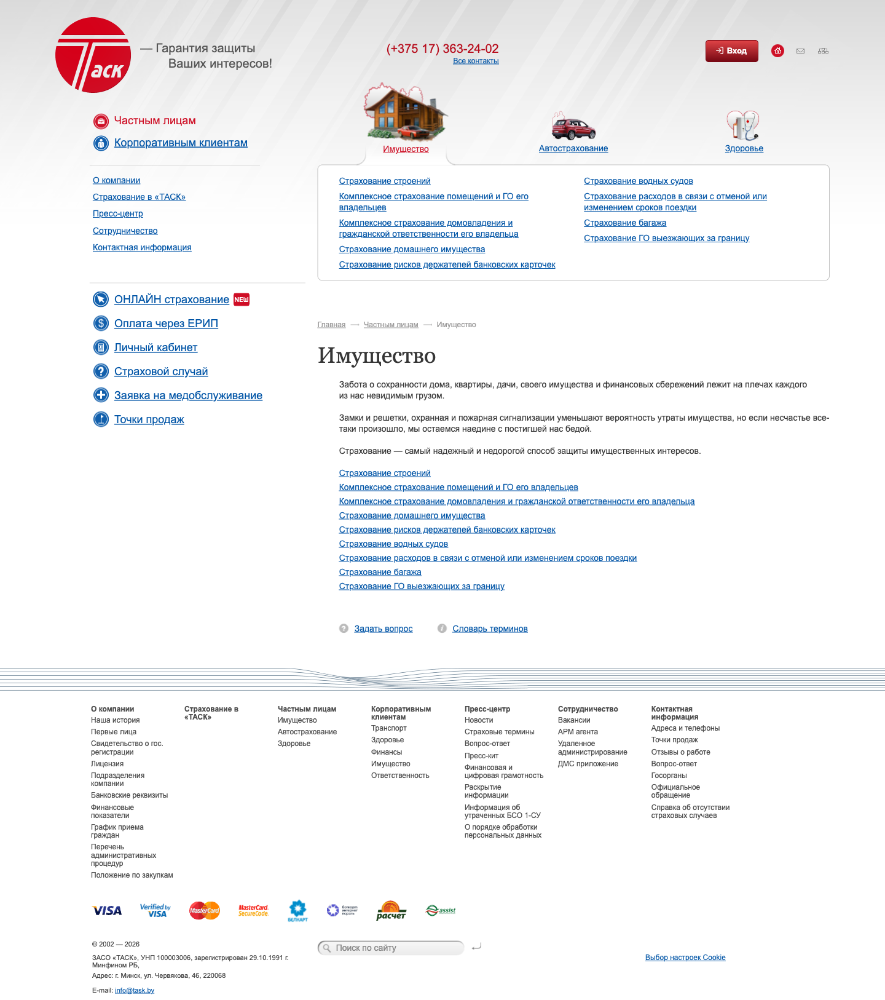
2. «Имущество» — landing раздела «Частным лицам» (/person/property/)
Переход по пункту меню «Частным лицам» редиректит именно сюда — фактически это и есть страница «для частных лиц». Показательна для оценки IA категорий.

3. Продуктовая страница «АвтоКаско» (/person/auto/kasko/)
Образец самой конверсионно значимой страницы сайта — страницы конкретного продукта с тарифами.
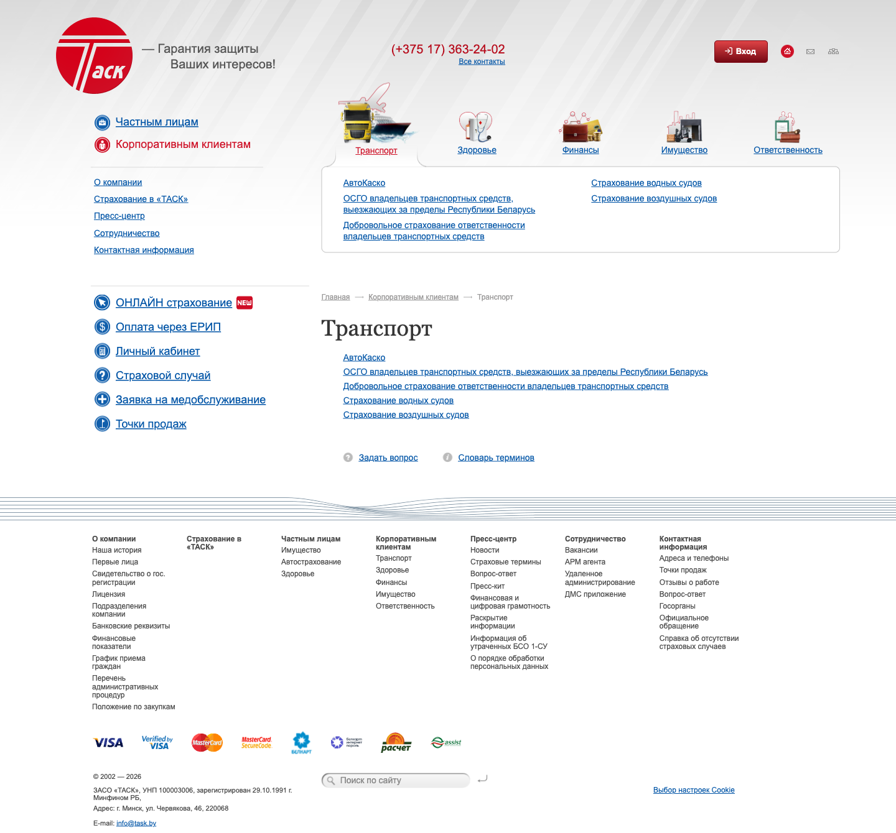
4. «Транспорт» — landing раздела «Корпоративным клиентам» (/corporate/)
Проверка, повторяется ли на B2B-стороне сайта тот же паттерн (редирект без landing-страницы, дублирование ссылок).
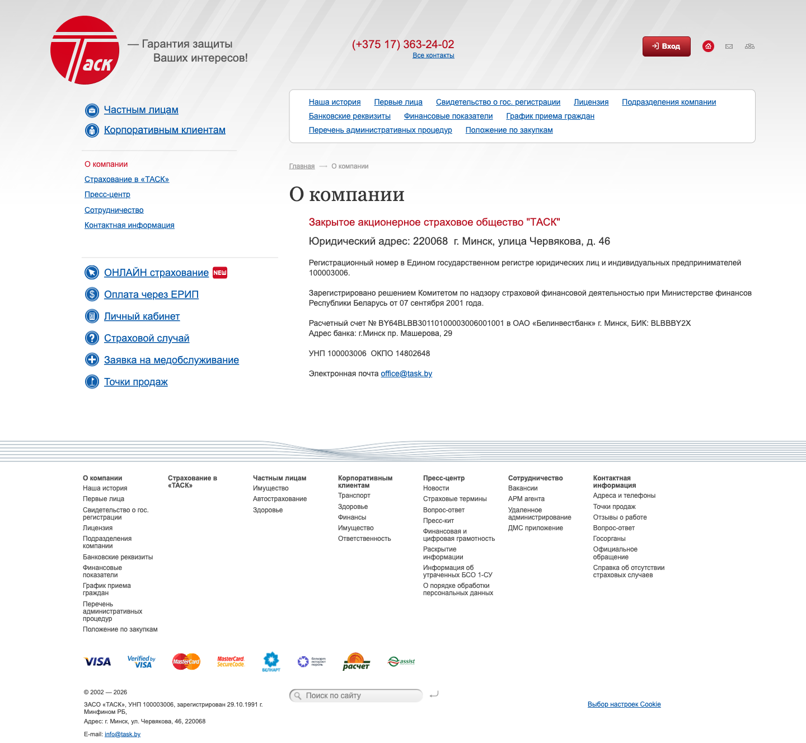
5. «О компании» (/about/)
Ключевая страница для доверия к финансовой организации — здесь пользователь ожидает историю, цифры, лица руководителей.

6. «Адреса и телефоны» (/contact/adresa_i_telefoni/)
Страница с самым высоким «намерением к действию» — критична для конверсии в офлайн-канал.
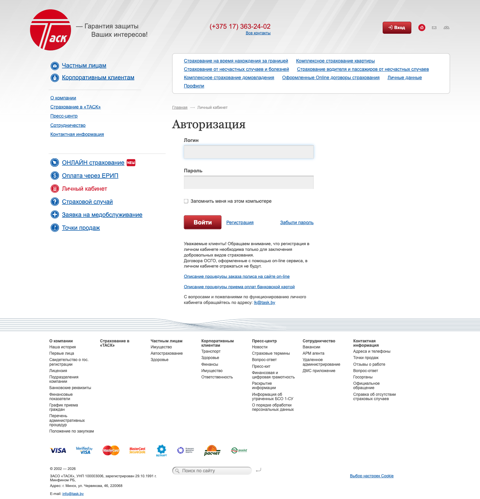
7. Авторизация в личном кабинете (/personal/)
Единственная полноценная форма на сайте — эталон для оценки паттернов форм.
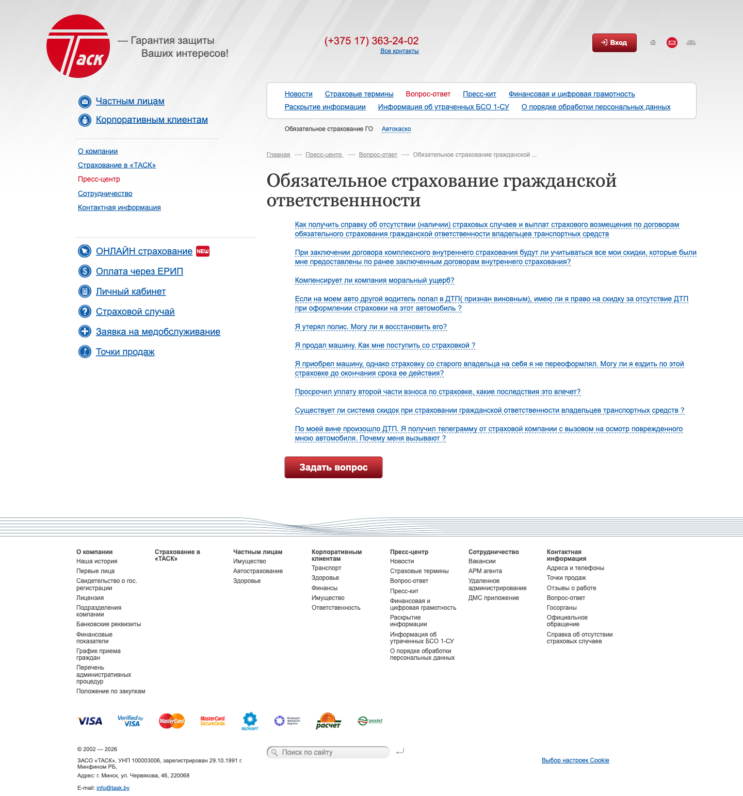
8. «Вопрос-ответ / ОСГО» (/press_centr/faq/)
Страница снятия возражений — важный элемент CRO-воронки перед покупкой полиса.
Найденные проблемы
1. Отсутствие кнопки оформления полиса на продуктовой странице
КритическийCROСтраница: АвтоКаско (/person/auto/kasko/); паттерн типовой для всех продуктовых страниц

- Описание
- Страница объёмом ~4000px содержит подробное описание продукта и полную тарифную таблицу. Единственный интерактивный элемент — кнопка «Страховой случай», ведущая на оформление уже наступившего страхового случая, а не на покупку нового полиса.
- Почему проблема
- Пользователь, готовый купить полис после изучения тарифов, не находит ни одной кнопки «Купить» или «Рассчитать стоимость».
- Влияние на пользователя
- Разрыв воронки в точке максимальной готовности к покупке; нужно искать альтернативный канал связи.
- Влияние на бизнес
- Прямая потеря заявок; продажи зависят от исходящей активности пользователя, а не от сайта.
- Влияние на конверсию
- Критично — единственная точка сайта, где разрыв воронки максимален при максимальной готовности к покупке.
- Как исправить
- Добавить sticky/контекстную кнопку «Рассчитать стоимость КАСКО» сразу после тарифов, ведущую на калькулятор или форму заявки.
- Ожидаемый эффект
- Рост онлайн-конверсии продуктовых страниц; снижение зависимости от телефонных обращений.
2. На мобильной версии полностью отсутствует номер телефона
КритическийMobileCROСтраница: Главная (мобильная); паттерн сквозной для всего сайта
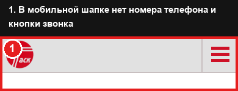
- Описание
- На десктопе телефон вынесен крупно в шапку. На мобильной версии (390px) в шапке и в открытом гамбургер-меню номера нет вовсе. Проверка DOM подтвердила 0 ссылок вида
tel:на сайте. - Почему проблема
- Телефон — основной канал оформления сложных страховых продуктов, особенно для возрастной аудитории.
- Влияние на пользователя
- 3-4 лишних шага вместо одного тапа по номеру.
- Влияние на бизнес
- Основной поток звонков, вероятно, не генерируется мобильным сайтом, хотя это основной источник трафика.
- Влияние на конверсию
- Критично для мобильного трафика — фактическое отсутствие основного CTA-канала.
- Как исправить
- Добавить sticky-кнопку «Позвонить» с
tel:-ссылкой в мобильную шапку; сделать все номера на сайте кликабельными. - Ожидаемый эффект
- Рост числа звонков с мобильного трафика.
3. Таблица тарифов обрезается на мобильном экране без индикатора прокрутки
КритическийMobileCROСтраница: АвтоКаско, мобильная версия
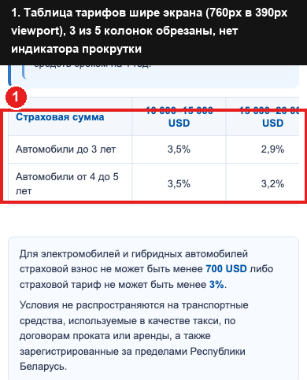
- Описание
- Таблица тарифов имеет фактическую ширину 760px внутри контейнера 370px на экране 390px (проверено через
getBoundingClientRect). Видны только 2 из 5 колонок, текст обрывается на середине слова. - Почему проблема
- Ключевая коммерческая информация — цена — физически недоступна без случайного обнаружения свайпа.
- Влияние на пользователя
- Видит только 2 диапазона из 5, может решить, что нужного тарифа нет.
- Влияние на бизнес
- Потеря доверия к сайту, потеря части тарифной информации, закрывающей возражение по цене.
- Влияние на конверсию
- Критично для мобильного сегмента продуктовых страниц.
- Как исправить
- Переверстать таблицу в вертикальные карточки на мобильном или добавить явный индикатор прокрутки.
- Ожидаемый эффект
- 100% тарифной информации доступно на любом экране.
4. Раздел «О компании» не формирует доверие
ВысокийTrustContentСтраница: О компании (/about/)
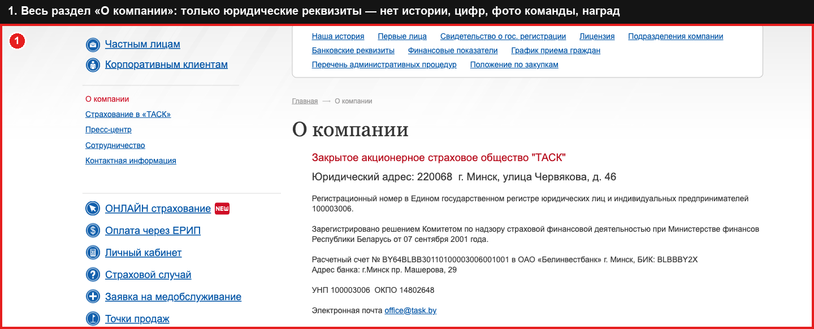
- Описание
- Вся страница — юридический адрес, регистрационный номер, банковские реквизиты, УНП/ОКПО и ссылка на e-mail. Нет истории, миссии, цифр, фото, наград.
- Почему проблема
- Для страховой организации страница «О компании» — инструмент эмоционального доверия, а не только юридическая справка.
- Влияние на пользователя
- Не получает эмоционального подтверждения надёжности компании.
- Влияние на бизнес
- Упущена возможность отработать возражение «а вдруг не выплатят» прямо на сайте.
- Влияние на конверсию
- Высокое — раздел часто посещают перед принятием решения о покупке.
- Как исправить
- Добавить историю (компания с 1991 года), ключевые цифры, фото первых лиц, награды/партнёров.
- Ожидаемый эффект
- Рост конверсии на этапе рассмотрения; снижение отказов на стадии «проверяю компанию».
5. Страница контактов — сплошной текст без карты и фильтра
ВысокийUXContentСтраница: Адреса и телефоны
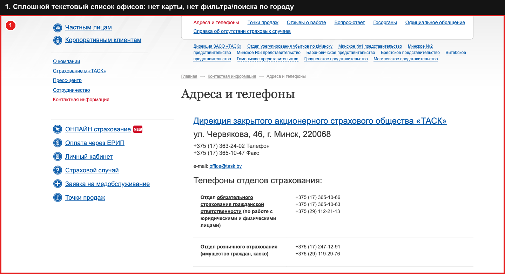
- Описание
- 11 представительств перечислены единым текстовым потоком (~3850px на десктопе, ~4580px на мобильном). Нет карты, фильтра по городу, карточек.
- Почему проблема
- Чтобы найти ближайший офис, нужно вручную сканировать весь список.
- Влияние на пользователя
- Высокая когнитивная нагрузка, долгий скролл.
- Влияние на бизнес
- Пользователи могут не найти нужный офис и уйти.
- Влияние на конверсию
- Высокое для сегмента, предпочитающего личное обращение.
- Как исправить
- Добавить карту с метками офисов, фильтр по городу, карточную вёрстку.
- Ожидаемый эффект
- Сокращение времени поиска офиса, снижение отказов на странице.
6. Системное дублирование блоков ссылок на одной странице
ВысокийUIContentСтраница: Имущество; тот же паттерн на «Транспорт» и «АвтоКаско»
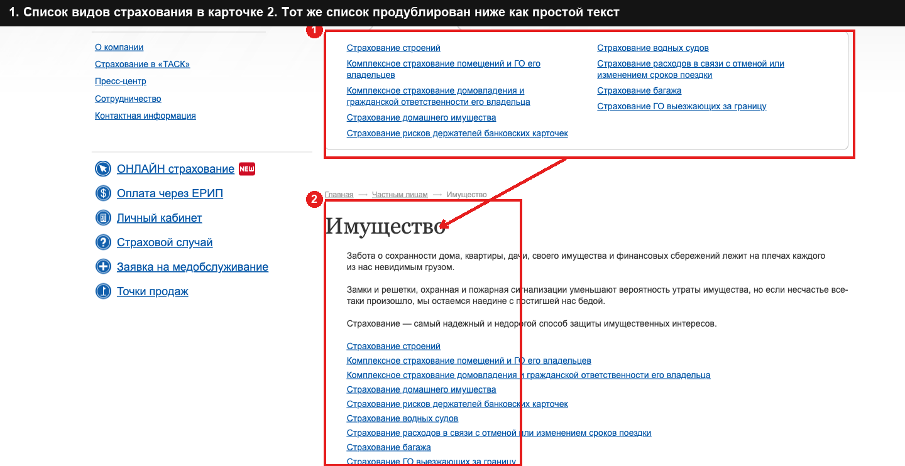
- Описание
- Один и тот же список видов страхования выводится дважды: в карточке-виджете и повторно простым списком ссылок ниже.
- Почему проблема
- Шаблонная (не разовая) ошибка, размывающая информационную плотность страницы.
- Влияние на пользователя
- Увеличивает длину страницы и «шум» без пользы.
- Влияние на бизнес
- Снижает воспринимаемое техническое качество сайта; усложняет SEO.
- Влияние на конверсию
- Средне-высокое — отвлекает от полезного контента.
- Как исправить
- Убрать дублирующий блок на уровне шаблона категории (системная правка).
- Ожидаемый эффект
- Более короткие, чистые страницы категорий.
7. Hero-блок на мобильной версии визуально «ломается»
ВысокийMobileVisual DesignСтраница: Главная, мобильная версия
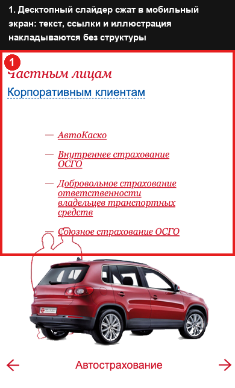
- Описание
- Десктопный слайдер сжат в мобильный вьюпорт без отдельной раскладки: заголовки, список ссылок и иллюстрация идут единым потоком без карточек и иерархии.
- Почему проблема
- Первый экран для большинства посетителей выглядит как незавершённая вёрстка.
- Влияние на пользователя
- Снижает доверие с первых секунд визита.
- Влияние на бизнес
- Прямой удар по первому впечатлению.
- Влияние на конверсию
- Высокое — повышает показатель отказов на входе.
- Как исправить
- Спроектировать отдельный мобильный hero: короткий заголовок, один CTA, компактная иллюстрация.
- Ожидаемый эффект
- Снижение отказов на мобильном трафике.
8. Устаревшая hero-иллюстрация на главной без чёткого CTA
ВысокийVisual DesignCROСтраница: Главная
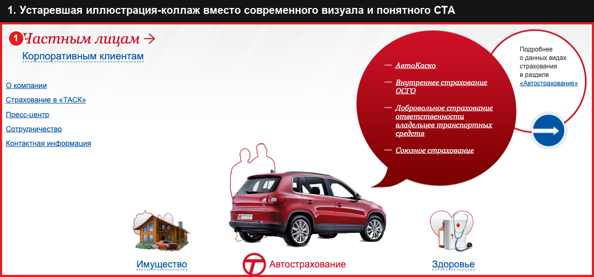
- Описание
- Центральный визуальный элемент — коллаж из клипарт-автомобиля, силуэтов людей, речевого «пузыря» и круглой кнопки-стрелки, без единого стиля.
- Почему проблема
- Визуальный язык — сигнал надёжности; клипарт ассоциируется с шаблонными сайтами 2010-х.
- Влияние на пользователя
- Ощущение, что компания не инвестирует в цифровые каналы.
- Влияние на бизнес
- Снижает конкурентоспособность бренда на фоне современных страховых сайтов.
- Влияние на конверсию
- Высокое — hero получает наибольшее внимание, но не содержит CTA.
- Как исправить
- Заменить на современную композицию: фото/минималистичная иллюстрация + заголовок с ценностным предложением + один CTA.
- Ожидаемый эффект
- Современное первое впечатление, точка входа в воронку с первого экрана.
9. FAQ реализован как список переходов, а не аккордеон
СреднийUXContentСтраница: Вопрос-ответ
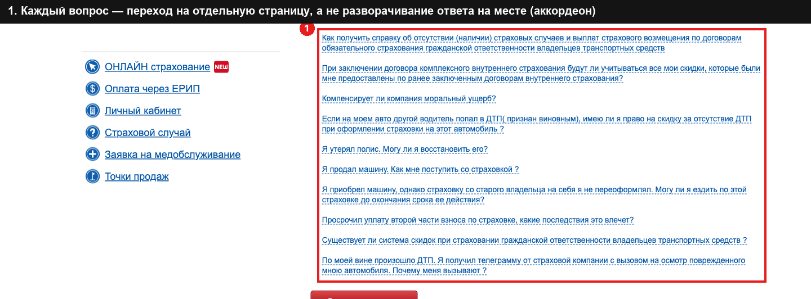
- Описание
- Все вопросы — подчёркнутые гиперссылки. Чтобы увидеть ответ, нужно покинуть страницу и вернуться назад для следующего вопроса.
- Почему проблема
- Стандарт для FAQ — разворачивание ответа на месте без перезагрузки страницы.
- Влияние на пользователя
- Больше кликов и времени на снятие возражений перед покупкой.
- Влияние на бизнес
- FAQ менее эффективно снижает нагрузку на колл-центр, чем мог бы.
- Влияние на конверсию
- Среднее — снижает шанс самостоятельного закрытия возражений.
- Как исправить
- Переверстать в аккордеон с разворачиванием ответа по клику, добавить поиск по вопросам.
- Ожидаемый эффект
- Более быстрое закрытие возражений, снижение нагрузки на поддержку.
10. Поиск по сайту спрятан в самом низу футера
СреднийNavigationСтраница: сквозной элемент, присутствует на всех страницах
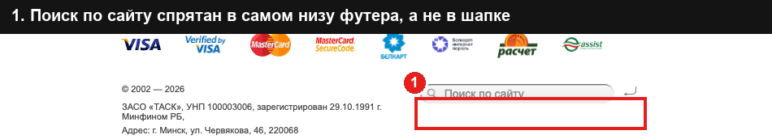
- Описание
- Единственное поле поиска расположено в подвале, ниже платёжных логотипов и ссылки на cookie.
- Почему проблема
- Поиск — базовый инструмент навигации на сайте с десятками подстраниц; расположение противоречит ожиданиям пользователей.
- Влияние на пользователя
- Пользователи, предпочитающие поиск меню, скорее всего не найдут эту возможность.
- Влияние на бизнес
- Снижение эффективности навигации по каталогу из 20+ видов страхования.
- Влияние на конверсию
- Среднее — теряется часть трафика, ищущего продукт по названию.
- Как исправить
- Перенести поиск в шапку сайта (десктоп и мобильная версия).
- Ожидаемый эффект
- Рост использования встроенного поиска.
11. Мелкий шрифт и избыточная длина строки в основном тексте
СреднийAccessibilityСтраница: Имущество (типовой пример для контентных страниц)
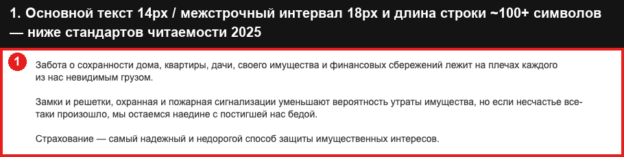
- Описание
- Основной текст — 14px, line-height 18px (коэффициент 1.29), ширина блока не ограничена (
max-width: none) — строка растягивается на 100+ символов. - Почему проблема
- Рекомендации 2026–2027 годов: минимум 16px, line-height ≥1.5, длина строки 50–75 символов.
- Влияние на пользователя
- Быстрая усталость глаз, особенно для возрастной аудитории страхового рынка.
- Влияние на бизнес
- Снижение вероятности дочитывания условий страхования, рост уточняющих звонков.
- Влияние на конверсию
- Среднее, но накопительное — влияет на весь контент сайта.
- Как исправить
- Увеличить шрифт до 16px, line-height до 1.5, ограничить ширину текстового блока.
- Ожидаемый эффект
- Более комфортное чтение, рост показателя дочитывания.
12. Мелкие области нажатия в блоке быстрых ссылок на мобильных «Контактах»
СреднийMobileAccessibilityСтраница: Адреса и телефоны, мобильная версия
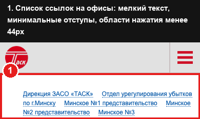
- Описание
- Блок из 10+ ссылок на представительства сверстан плотным списком с минимальными отступами.
- Почему проблема
- Рекомендованная минимальная область нажатия — 44×44px; ссылки идут почти вплотную.
- Влияние на пользователя
- Промахи при нажатии, необходимость увеличивать масштаб.
- Влияние на бизнес
- Незначительно повышает отказы на мобильной странице контактов.
- Влияние на конверсию
- Низко-среднее.
- Как исправить
- Увеличить отступы между пунктами; рассмотреть выпадающий селектор города.
- Ожидаемый эффект
- Снижение числа ошибочных нажатий.
ТОП-10 самых критичных проблем
Ранжировано по влиянию на бизнес, от самого критичного:
Быстрые улучшения
Низкие трудозатраты, высокий эффект — внедрить в первую очередь.
- Сделать все номера телефонов кликабельными (
tel:-ссылки), особенно в шапке и мобильном меню - Добавить номер телефона / кнопку «Позвонить» в мобильную шапку и меню
- Убрать задвоенные блоки ссылок на страницах категорий
- Перенести поле поиска из футера в шапку сайта
- Добавить на все продуктовые страницы кнопку «Рассчитать стоимость» рядом с тарифной таблицей
- Добавить визуальный индикатор прокрутки для таблиц, не помещающихся в мобильный экран
Среднесрочные улучшения
Требуют дизайна и разработки в рамках 1–2 спринтов.
- Переверстать таблицы тарифов под мобильные экраны (карточки вместо горизонтальной таблицы)
- Спроектировать отдельный мобильный hero-блок для главной страницы
- Добавить интерактивную карту с фильтром по городу на странице контактов
- Перевести FAQ на компонент-аккордеон с поиском по вопросам
- Увеличить базовый размер шрифта до 16px и line-height до 1.5
- Переработать раздел «О компании»: история, цифры, фотографии
Долгосрочные рекомендации
Стратегические инициативы, 1–2+ квартала.
- Разработать полноценный онлайн-калькулятор стоимости полиса с оформлением и оплатой
- Обновить визуальный язык бренда целиком под стандарты 2026–2027
- Собрать и внедрить систему социальных доказательств (отзывы, кейсы, партнёры, рейтинги)
- Спроектировать полноценные landing-страницы для «Частным лицам» и «Корпоративным клиентам»
- Внедрить единую дизайн-систему с переиспользуемыми компонентами
Общий вывод
task.by — типичный пример сайта страховой компании, который долгое время развивался как склад информации, а не как продающий цифровой канал. Информационная полнота, юридическая прозрачность и стабильность навигации — реальные сильные стороны, которые не стоит разрушать при доработке. Но с точки зрения современных enterprise UX-стандартов сайт проигрывает по всем направлениям, напрямую влияющим на бизнес-результат: отсутствие CTA на продуктовых страницах, критичные мобильные дефекты и визуальный язык полтора десятилетия давности.
Наибольший ROI даст не полный редизайн, а точечное устранение конверсионных разрывов (пункты 1–3 в ТОП-10) в сочетании с исправлением системных дефектов шаблонов. Обновление визуального языка и построение доверительной истории компании — следующий по приоритету, но более капиталоёмкий этап, который стоит проводить как часть общей стратегии цифровизации бренда.